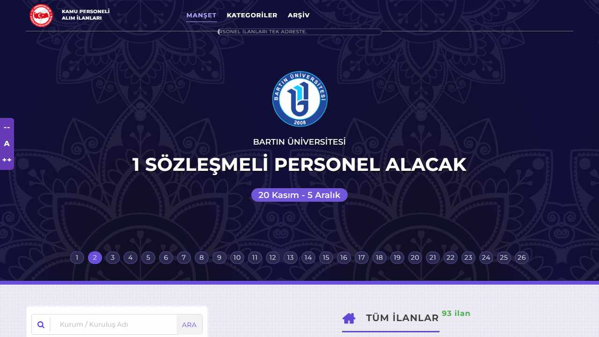
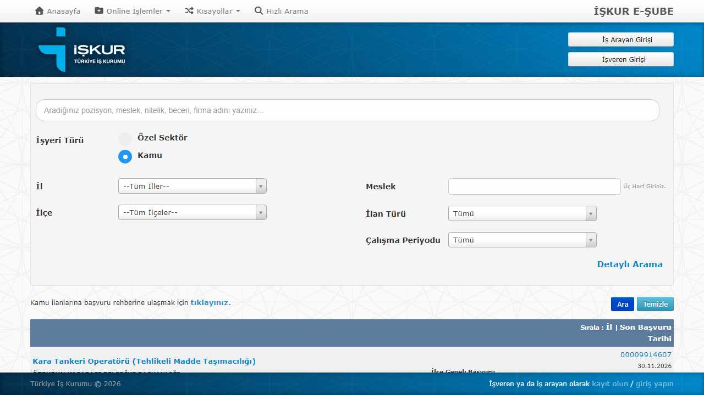

Tanı sayfası
İlan.gov.tr sitede toplam: 120, okunan: 120, sayfalama: currentPage
Son URL: https://www.ilan.gov.tr/ilan/tum-ilanlar/personel-alimi?ats=5¤tPage=10
Başlık: ilan.gov.tr - Türkiye'nin İlan Portalı

Sayfa metni (ilk 1500 karakter)
Tüm İlanlar Kurumsal Destek İletişim Üye OlGiriş Yap Yardım TÜM İLANLAR İCRA İHALE TEBLİGAT PERSONEL ALIMI Ana Sayfa Kategoriler Kamu-Akademik Personel (120) Kelime ile Arayınız İlan Yeri Lütfen İl Seçiniz Yayın Tarihi Yayına Göre Arama Lütfen Yayın Seçiniz Kuruma Göre Arama Lütfen Kurum Seçiniz Fiyat İlan Türü Seçiniz İCRA İHALE TEBLİGAT PERSONEL ALIMI Eleman Sayısı Aranılan Nitelik ve Unvan Başvuru Süresi İlan Ara Görünüm Tarihe göre sıralama Toplam 120 ilan Kurum Başlık İlan Numarası Şehir EYYÜBİYE BELEDİYE BAŞKANLIĞI Eyyübiye Belediye Başkanlığı Zabıta Memuru Alım İlanı DPB845555 ŞANLIURFA DOĞU KARADENİZ KALKINMA AJANSI GENEL SEKRETERLİĞİ (DOKA) Doğu Karadeniz Kalkınma Ajansından (DOKA) Personel Alım İlanı DPB845554 TRABZON BOĞAZİÇİ ÜNİVERSİTESİ REKTÖRLÜĞÜ Boğaziçi Üniversitesi Rektörlüğünden Öğretim Görevlisi Alım İlanı YOK853567 İSTANBUL ASARCIK BELEDİYE BAŞKANLIĞI Asarcık Belediye Başkanlığı Memur Alım İlanı DPB845546 SAMSUN ELAZIĞ İL ÖZEL İDARESİ Elazığ İl Özel İdaresi Sözleşmeli Personel Alım İlanı DPB845543 ELAZIĞ DOĞANYOL BELEDİYE BAŞKANLIĞI İptal İlanı (Doğanyol Belediye Başkanlığı) DPB845541 MALATYA AKHİSAR BELEDİYE BAŞKANLIĞI Manisa İli Akhisar Belediye Başkanlığından Memur Alım İlanı DPB845537 MANİSA DOĞANYOL BELEDİYE BAŞKANLIĞI Doğanyol Belediye Başkanlığı Sözleşmeli Personel Alım İlanı DPB845528 MALATYA ORTA ANADOLU KALKINMA AJANSI GENEL SEKRETERLİĞİ Orta Anadolu Kalkınma Ajansından Personel Alım İlanı DPB845521 KAYSERİ ANKARA BÜYÜKŞEHİR BELEDİYE BAŞKA
Bulunan linkler (ilk 40)
'' -> / 'Tüm İlanlar' -> /ilan/tum-ilanlar 'İCRA' -> /ilan/tum-ilanlar/icra?ats=2 'İHALE' -> /ilan/tum-ilanlar/ihale?ats=3 'TEBLİGAT' -> /ilan/tum-ilanlar/tebligat?ats=4 'PERSONEL ALIMI' -> /ilan/tum-ilanlar/personel-alimi?ats=5 '' -> /ilan/tum-ilanlar/icra?ats=2 '' -> /ilan/kategori/1/emlak?ats=2 '' -> /ilan/kategori/2/vasita?ats=2 '' -> /ilan/kategori/4/endustriyel-urunler?ats=2 '' -> /ilan/kategori/6/elektronik?ats=2 '' -> /ilan/kategori/3/muhtelif?ats=2 '' -> /ilan/tum-ilanlar/ihale?ats=3 '' -> /ilan/kategori/9/ihale-duyurulari?ats=3 '' -> /ilan/kategori/1/emlak?ats=3 '' -> /ilan/kategori/2/vasita?ats=3 '' -> /ilan/kategori/4/endustriyel-urunler?ats=3 '' -> /ilan/kategori/5/hayvan-ve-hayvancilik?ats=3 '' -> /ilan/tum-ilanlar/tebligat?ats=4 '' -> /ilan/kategori/7/tebligat-ve-duyurular?ats=4 '' -> /ilan/kategori/12/iflas-hukuku-davalari?ats=4 '' -> /ilan/tum-ilanlar/personel-alimi?ats=5 '' -> /ilan/kategori/8/kamu-akademik-personel?ats=5 '' -> /ilan/tum-ilanlar 'Kurumsal' -> /kurumsal-basin-ilan-kurumu 'Destek' -> /yardim-nasil-uye-olurum 'İletişim' -> /iletisim-genel-mudurluk '' -> https://www.facebook.com/resmiilan/ '' -> https://sosyal.teknofest.app/@ilangovtr '' -> https://twitter.com/ilangovtr '' -> https://www.youtube.com/channel/UCoLna6joUEuJ4eO7bjCP_Bw '' -> https://www.instagram.com/resmiilan/ '' -> https://www.linkedin.com/company/ilan-gov-tr/ 'Üye Ol' -> /uyelik/uye-ol 'Giriş Yap' -> /uyelik/giris 'TÜM İLANLAR' -> /ilan/tum-ilanlar 'İCRA' -> /ilan/tum-ilanlar/icra?ats=2 'İHALE' -> /ilan/tum-ilanlar/ihale?ats=3 'TEBLİGAT' -> /ilan/tum-ilanlar/tebligat?ats=4 'PERSONEL ALIMI' -> /ilan/tum-ilanlar/personel-alimi?ats=5
Arka plan (XHR/fetch) istekleri
GET 200 https://www.ilan.gov.tr//assets/appconfig.production.json
yanıt: {
"remoteServiceBaseUrl": "https://www.ilan.gov.tr/api",
"appBaseUrl": "https://www.ilan.gov.tr",
"cdnBaseUrl": "https://medya.ilan.gov.tr/"
}
GET 200 https://www.ilan.gov.tr/api/AbpUserConfiguration/GetAll
yanıt: {"result":{"multiTenancy":{"isEnabled":false,"ignoreFeatureCheckForHostUsers":false,"sides":{"host":"Host","tenant":"Tenant"}},"session":{"userId":null,"tenantId":1,"impersonatorUserId":null,"impersonatorTenantId":1,"multiTenancySide":"Tenant"},"localization":{"currentCulture":{"name":"tr","displayN
POST 200 https://www.google-analytics.com/j/collect?v=1&_v=j102&a=466482729&t=pageview&_s=1&dl=https%3A%2F%2Fwww.ilan.gov.tr%2Filan%2Ftum-ilanlar%2Fpersonel-alimi%3Fats%3D5&ul=tr-tr&dt=ilan.gov.tr%20-%20T%C3%B
GET 200 https://www.ilan.gov.tr/api/api/services/app/Session/GetCurrentLoginInformations
yanıt: {"result":{"application":{"version":"5.0.0.0","releaseDate":"2026-09-24T04:22:04Z","features":{}},"user":null,"tenant":{"tenancyName":"Default","name":"Default","id":1}},"targetUrl":null,"success":true,"error":null,"unAuthorizedRequest":false,"__abp":true}
GET 200 https://www.ilan.gov.tr/api/api/services/app/Banner/GetDetailUniversal?bannerPositionEnum=Popup_Genel
yanıt: {"result":null,"targetUrl":null,"success":true,"error":null,"unAuthorizedRequest":false,"__abp":true}
GET 200 https://www.ilan.gov.tr/api/api/services/app/AdHomePage/GetRichMenuStats
yanıt: {"result":[{"id":2,"key":"İCRA","displayName":null,"slug":"İCRA","plateNumber":null,"count":0,"stats":[{"id":1,"key":"Emlak","displayName":null,"slug":"Emlak","plateNumber":null,"count":8907,"stats":null,"orderNo":25,"statType":"Category","logoPath":null,"iconFullPath":null},{"id":2,"key":"Vasıta","
GET 200 https://www.ilan.gov.tr/api/api/services/app/Banner/GetDetailUniversal?bannerPositionEnum=Genel_Ust
yanıt: {"result":null,"targetUrl":null,"success":true,"error":null,"unAuthorizedRequest":false,"__abp":true}
GET 200 https://www.ilan.gov.tr/api/api/services/app/Banner/GetDetailUniversal?bannerPositionEnum=Mobil_Genel_Sol
yanıt: {"result":null,"targetUrl":null,"success":true,"error":null,"unAuthorizedRequest":false,"__abp":true}
GET 200 https://www.ilan.gov.tr/api/api/services/app/Banner/GetDetailUniversal?bannerPositionEnum=Genel_Sag
yanıt: {"result":null,"targetUrl":null,"success":true,"error":null,"unAuthorizedRequest":false,"__abp":true}
GET 200 https://www.ilan.gov.tr/api/api/services/app/Banner/GetDetailUniversal?bannerPositionEnum=Genel_Sol
yanıt: {"result":null,"targetUrl":null,"success":true,"error":null,"unAuthorizedRequest":false,"__abp":true}
GET 200 https://www.ilan.gov.tr/api/api/services/app/Banner/GetDetailUniversal?bannerPositionEnum=Mobil_Genel_Ust
yanıt: {"result":null,"targetUrl":null,"success":true,"error":null,"unAuthorizedRequest":false,"__abp":true}
GET 200 https://www.ilan.gov.tr/api/api/services/app/Menu/GetBottomMenu
yanıt: {"result":[{"id":81,"parentId":null,"url":null,"title":"KURUMSAL","children":[{"id":86,"parentId":81,"url":"/kurumsal-basin-ilan-kurumu","title":"Basın İlan Kurumu","children":null,"isSelected":false,"contentTitle":"-","contentSlug":"-","contentDetail":"-"},{"id":170,"parentId":81,"url":"/kurumsal-t
GET 200 https://www.ilan.gov.tr/api/api/services/app/Banner/GetDetailUniversal?bannerPositionEnum=Mobil_Genel_Sag
yanıt: {"result":null,"targetUrl":null,"success":true,"error":null,"unAuthorizedRequest":false,"__abp":true}
POST 204 https://www.google-analytics.com/g/collect?v=2&tid=G-E5HGE1NKEK>m=45je6bh1v9116736288za20ozb9119647798zd9119647798xf1&_p=1795629158182&gcd=13l3l3l3l1l1&npa=0&dma=0&are=1&cid=1634111888.1795629159&fr
POST 204 https://www.google-analytics.com/g/collect?v=2&tid=G-E5HGE1NKEK>m=45je6bh1v9116736288za20gzb9119647798zd9119647798xf1&_p=1795629158182&gcd=13l3l3l3l1l1&npa=0&dma=0&_eu=AEAAAAQ&ae=a&are=1&cid=1634111
GET 200 https://www.ilan.gov.tr/api/api/services/app/Banner/GetDetailUniversal?bannerPositionEnum=Icsayfa_Ust
GET 200 https://www.ilan.gov.tr/api/api/services/app/Banner/GetDetailUniversal?bannerPositionEnum=Mobil_Icsayfa_Ust
GET 200 https://www.ilan.gov.tr/api/api/services/app/Banner/GetDetailUniversal?bannerPositionEnum=Icsayfa_Sol
GET 200 https://www.ilan.gov.tr/api/api/services/app/Banner/GetDetailUniversal?bannerPositionEnum=Mobil_Icsayfa_Sol
GET 200 https://www.ilan.gov.tr/api/api/services/app/Banner/GetDetailUniversal?bannerPositionEnum=Icsayfa_Sag
GET 200 https://www.ilan.gov.tr/api/api/services/app/Banner/GetDetailUniversal?bannerPositionEnum=Mobil_Icsayfa_Sag
GET 200 https://www.ilan.gov.tr/api/api/services/app/AdHomePage/GetAdStatsByExternalInstitutions
GET 200 https://www.ilan.gov.tr/api/api/services/app/Filter/GetAllFiltersOfSet?setIdAdType=5
POST 200 https://www.ilan.gov.tr/api/api/services/app/Ad/AdsByFilter
gövde: {"keys":{"ats":[5]},"skipCount":0,"maxResultCount":12}
GET 200 https://www.ilan.gov.tr/api/api/services/app/Banner/GetDetailUniversal?bannerPositionEnum=Icsayfa_Orta_IlanListeleme_IlanTuru5Resmî Gazete sitede toplam: 11, okunan: 11, personel ilanı: 4, PDF bulma: dizin linkleri — veritabanından tekrar kullanılan: 4
Son URL: https://www.resmigazete.gov.tr/ilanlar/eskiilanlar/2026/11/20261125-4.htm
Başlık: ÇEŞİTLİ İLANLAR

Sayfa metni (ilk 1500 karakter)
25 Kasım 2026 ÇARŞAMBA Resmî Gazete Sayı : 33441 ÇEŞİTLİ İLÂNLAR Biruni Üniversitesi Rektörlüğünden: Adalet Bakanlığı Ceza ve Tevkifevleri Genel Müdürlüğünden: Çevre, Şehircilik ve İklim Değişikliği Bakanlığı Yapı İşleri Genel Müdürlüğünden: Çevre, Şehircilik ve İklim Değişikliği Bakanlığı Yerel Yönetimler Genel Müdürlüğünden: Milli Eğitim Bakanlığı Destek Hizmetleri Genel Müdürlüğünden: Milli Eğitim Bakanlığı Temel Eğitim Genel Müdürlüğünden: Milli Savunma Bakanlığı Tedarik Hizmetleri Genel Müdürlüğünden: Marmara Üniversitesi Rektörlüğünden: Çağ Üniversitesi Rektörlüğünden: Manisa Celal Bayar Üniversitesi Rektörlüğünden: Kültür ve Turizm Bakanlığından:
Bulunan linkler (ilk 40)
'Biruni Üniversitesi Rektörlüğünden:' -> 20261125-4-1.pdf 'Adalet Bakanlığı Ceza ve Tevkifevleri Genel Müdürlüğünden:' -> 20261125-4-2.pdf 'Çevre, Şehircilik ve İklim Değişikliği Bakanlığı Yapı İşleri Genel Müd' -> 20261125-4-3.pdf 'Çevre, Şehircilik ve İklim Değişikliği Bakanlığı Yerel Yönetimler Gene' -> 20261125-4-4.pdf 'Milli Eğitim Bakanlığı Destek Hizmetleri Genel Müdürlüğünden:' -> 20261125-4-5.pdf 'Milli Eğitim Bakanlığı Temel Eğitim Genel Müdürlüğünden:' -> 20261125-4-6.pdf 'Milli Savunma Bakanlığı Tedarik Hizmetleri Genel Müdürlüğünden:' -> 20261125-4-7.pdf 'Marmara Üniversitesi Rektörlüğünden:' -> 20261125-4-8.pdf 'Çağ Üniversitesi Rektörlüğünden:' -> 20261125-4-9.pdf 'Manisa Celal Bayar Üniversitesi Rektörlüğünden:' -> 20261125-4-10.pdf 'Kültür ve Turizm Bakanlığından:' -> 20261125-4-11.pdf
Arka plan (XHR/fetch) istekleri
POST 200 https://v2-ping-ns01-4878e6a4-2a79-41cc-93d6-0ffc5a9b6c2d.collector.p.analitik.bik.gov.tr/api/collect/check
gövde: {"website":"4878e6a4-2a79-41cc-93d6-0ffc5a9b6c2d","hostname":"www.ilan.gov.tr","eventId":"1cd3d667-2767-4932-b0eb-5b1209c9cbab","isBot":false,"td":0,"ts":1795379873000,"timestamp":1795629194907,"activKariyer Kapısı IlanDetay linkleri doğrudan bulundu; sitede toplam: 22, okunan: 22, harici siteye giden (İlana Git): 3
Son URL: https://kariyerkapisi.gov.tr/isealim
Başlık: Kariyer Kapısı - Anasayfa

Sayfa metni (ilk 1500 karakter)
e-Devlet ile Giriş Sıkça Sorulan Sorular Kurum Seçiniz ADLİ TIP KURUMU BAŞKANLIĞI(1İLAN) AFET VE ACİL DURUM YÖNETİMİ BAŞKANLIĞI (AFAD)(2İLAN) ANADOLU ÜNİVERSİTESİ REKTÖRLÜĞÜ(1İLAN) ANKARA YILDIRIM BEYAZIT ÜNİVERSİTESİ REKTÖRLÜĞÜ(1İLAN) BARTIN ÜNİVERSİTESİ REKTÖRLÜĞÜ(1İLAN) BURSA TEKNİK ÜNİVERSİTESİ REKTÖRLÜĞÜ(1İLAN) DEVLET TİYATROLARI GENEL MÜDÜRLÜĞÜ(1İLAN) DOĞU KARADENİZ KALKINMA AJANSI(1İLAN) HAZİNE VE MALİYE BAKANLIĞI(1İLAN) İÇİŞLERİ BAKANLIĞI(1İLAN) JANDARMA VE SAHİL GÜVENLİK AKADEMİSİ BAŞKANLIĞI(1İLAN) KAMU İHALE KURUMU(1İLAN) KARABAĞLAR BELEDİYE BAŞKANLIĞI(1İLAN) ORTA ANADOLU KALKINMA AJANSI(1İLAN) REKABET KURUMU BAŞKANLIĞI(1İLAN) SAHİL GÜVENLİK KOMUTANLIĞI(1İLAN) SAVUNMA SANAYİİ BAŞKANLIĞI(1İLAN) SAYIŞTAY BAŞKANLIĞI(1İLAN) SOSYAL GÜVENLİK KURUMU BAŞKANLIĞI(1İLAN) TÜRK AKREDİTASYON KURUMU GENEL SEKRETERLİĞİ(1İLAN) TÜRK-ALMAN ÜNİVERSİTESİ REKTÖRLÜĞÜ(1İLAN) TÜRKİYE İSTATİSTİK KURUMU (TÜİK)(1İLAN) YILDIZ TEKNİK ÜNİVERSİTESİ REKTÖRLÜĞÜ(1İLAN) ZAFER KALKINMA AJANSI(1İLAN) Kurum Seçiniz İlan Türünü Seçiniz A Grubu Memur (Kariyer Meslek) B Grubu Memur Sözleşmeli Personel İlanları İşçi İlanları Hakim ve Savcı İlanları Görevde Yükselme ve Unvan Değişikliği İlanları Yurt Dışı Eğitim İlanları Belge Başvurusu İlanları Tercih İlanı Öğretim Üyesi Öğretim Görevlisi Araştırma Görevlisi Askeri Personel İlanları Merkezi Yerleştirme (ÖSYM) Sürekli İşçi Geçici İşci Engelli İşçi Eski Hükümlü İşçi Yeterlik Sınavı İlanları İlan Türünü Seçiniz İl Seçiniz BAKANLIK MERKEZ TEŞKİLATI TÜRKİYE G
Bulunan linkler (ilk 40)
'' -> # '' -> # 'e-Devlet ile Giriş' -> https://giris.turkiye.gov.tr/OAuth2AuthorizationServer/AuthorizationController?response_type=code&client_id=88 'Sıkça Sorulan Sorular' -> sss '' -> # 'Başvur' -> IlanDetay?i=98cd96c1-83b3-425a-869c-dae40ba7aee1 'Başvur' -> IlanDetay?i=ff6084a1-bbdd-45d7-b62e-a649a026a2b2 'Başvur' -> IlanDetay?i=dea72757-7130-466f-bcf2-8d316d02add1 'İlana Git' -> https://turkiye.gov.tr/sahil-guvenlik-komutanligi-is-basvurusu 'Başvur' -> IlanDetay?i=89781649-6080-4021-9739-f8ba3d875cd0 'Başvur' -> IlanDetay?i=224db1dc-e78f-47df-809c-61ede62b9c36 'Başvur' -> IlanDetay?i=31b4b404-05cb-4298-9460-1ab3b13b33e8 'Başvur' -> IlanDetay?i=8892720e-d38e-46f8-994e-138c6d4b7d81 'Başvur' -> IlanDetay?i=f82ad1a8-39b9-4732-acb4-be6cbe8f772e 'Başvur' -> IlanDetay?i=a1ba338b-81ac-4dfb-9cc3-dc53c4c438cd 'Başvur' -> IlanDetay?i=4850e095-8b16-4aba-9956-555740a41146 'Başvur' -> IlanDetay?i=2b5ee2d8-3958-4fd1-a3cb-219bcb7b536d 'Başvur' -> IlanDetay?i=9ff8772a-9434-42fb-84ad-f8080f79640d 'Başvur' -> IlanDetay?i=0dee67ed-656b-4fa2-9ffd-deb7672253b8 'Başvur' -> IlanDetay?i=35749108-46fb-4b62-bc89-3700f1525802 'Başvur' -> IlanDetay?i=dc97ce1e-dce0-408a-a785-682c4656435e 'Başvur' -> IlanDetay?i=a75fb51f-19e0-4d1e-95fe-1e52774310c2 'Başvur' -> IlanDetay?i=3d77e559-3036-4ce5-8131-0d7adae39f48 'İlana Git' -> https://personeltemin.jandarma.gov.tr 'İlana Git' -> https://www.turkiye.gov.tr/icisleri-bakanligi-personel-sinav-basvurusu 'Başvur' -> IlanDetay?i=6e7cd2e5-b3d8-4c95-916b-6e1ff234b0b0 'Başvur' -> IlanDetay?i=7cc8cb95-4799-4879-a104-8362bf62ca4d 'Başvur' -> IlanDetay?i=6a34cb10-0ac0-41e0-a094-3ec83e29a644 'Başvur' -> IlanDetay?i=41353f9d-7dda-4b65-b2ba-de6bf8e72f54 'Başvur' -> IlanDetay?i=5fb0c697-781e-4ea8-befb-3f041d6b9385 '' -> https://twitter.com/kariyerkapisi '' -> https://www.linkedin.com/showcase/kariyerkapisi/ '' -> https://www.instagram.com/kariyerkapisi/?igshid=sj6wm9vis9se '' -> https://www.facebook.com/kariyerkapisi/ '' -> /isealim '' -> https://kariyerkapisi.gov.tr/RSS/RssLinkiAl '' -> https://www.linkedin.com/showcase/kariyerkapisi '' -> https://www.facebook.com/kariyerkapisi/ '' -> https://twitter.com/kariyerkapisi '' -> https://instagram.com/kariyerkapisi?igshid=sj6wm9vis9se
Arka plan (XHR/fetch) istekleri
POST 200 https://api.kariyerkapisi.gov.tr/api/ilan/GetIseAlimPage
gövde: {"krM_ID":0,"searchText":"","il":"0","ilanTuru":"0"}
yanıt: {"ilanCountForKurum":[{"krM_ID":45,"adi":"ADLİ TIP KURUMU BAŞKANLIĞI","ilanCount":1},{"krM_ID":68,"adi":"AFET VE ACİL DURUM YÖNETİMİ BAŞKANLIĞI (AFAD)","ilanCount":2},{"krM_ID":97,"adi":"ANADOLU ÜNİVERSİTESİ REKTÖRLÜĞÜ","ilanCount":1},{"krM_ID":205,"adi":"ANKARA YILDIRIM BEYAZIT ÜNİVERSİTESİ REKTÖRL
POST 204 https://www.google-analytics.com/g/collect?v=2&tid=G-756JYX7QPN>m=45je6bh1v9228915839za208zd9228915839xf1&_p=1795629200129&gcd=13l3l3l3l1l1&npa=0&dma=0&are=1&cid=1044293036.1795629201&frm=0&ngs=1&ps
POST 204 https://www.google-analytics.com/g/collect?v=2&tid=G-756JYX7QPN>m=45je6bh1v9228915839za200zd9228915839xf1&_p=1795629200129&gcd=13l3l3l3l1l1&npa=0&dma=0&_eu=AEAAAAQ&ae=a&are=1&cid=1044293036.17956292SBB Kamu İlan sitede toplam: 90, okunan: 118 (ham bağlantı: 118, tekrarlar elendi) — detay metni okunan: 0/111 — veritabanından tekrar kullanılan: 111 (+7 ilgisiz başlık atlandı)
Son URL: https://kamuilan.sbb.gov.tr/
Başlık: Kamu Personeli Alım İlanları

Sayfa metni (ilk 1500 karakter)
KAMU PERSONELİ ALIM İLANLARI MANŞET KATEGORİLER ARŞİV TÜM KAMU PERSONEL İLANLARI TEK ADRESTE. ORTA ANADOLU KALKINMA AJANSI 6 UZMAN, 1 DESTEK PERSONELİ ALACAK 9 Kasım - 3 Aralık REKABET KURUMU BAŞKANLIĞI 55 REKABET UZMAN YARDIMCISI ALACAK 7 Aralık - 21 Aralık TÜRK-ALMAN ÜNİVERSİTESİ 5 SÖZLEŞMELİ BİLİŞİM PERSONELİ ALACAK 30 Kasım - 14 Aralık KÜLTÜR VE TURİZM BAKANLIĞI 20 UZMAN YARDIMCISI ALACAK 9 Aralık - 23 Aralık İÇİŞLERİ BAKANLIĞI 1170 SÖZLEŞMELİ PERSONEL ALACAK 7 Aralık - 11 Aralık ANKARA YILDIRIM BEYAZIT ÜNİVERSİTESİ 1 SÖZLEŞMELİ BİLİŞİM PERSONELİ ALACAK 23 Kasım - 7 Aralık ONDOKUZ MAYIS ÜNİVERSİTESİ 21 SÜREKLİ İŞÇİ ALACAK 23 Kasım - 27 Kasım JANDARMA GENEL KOMUTANLIĞI 9000 UZMAN ERBAŞ TEMİN EDİLECEKTİR. 23 Kasım - 7 Aralık MİLLİ SAVUNMA BAKANLIĞI ENGELLİ VE TERÖRLE MÜCADELEDE MALUL SAYILMAYACAK ŞEKİLDE YARALANANLARDAN SÜREKLİ İŞÇİ TEMİNİ İLANI 23 Kasım - 27 Kasım TÜRK AKREDİTASYON KURUMU 3 SÖZLEŞMELİ KORUMA VE GÜVENLİK PERSONELİ ALACAK 23 Kasım - 7 Aralık ADLİ TIP KURUMU BAŞKANLIĞI 181 SÖZLEŞMELİ PERSONEL ALACAK 30 Kasım - 6 Aralık BARTIN ÜNİVERSİTESİ 1 SÖZLEŞMELİ PERSONEL ALACAK 20 Kasım - 5 Aralık İÇİŞLERİ BAKANLIĞI 60 KAYMAKAM ADAYI ALACAK 1 Aralık - 7 Aralık SOSYAL GÜVENLİK KURUMU BAŞKANLIĞI 50 MÜFETTİŞ YARDIMCISI ALACAK 7 Aralık - 18 Aralık HAZİNE VE MALİYE BAKANLIĞI 10 STAJYER HAZİNE KONTROLÖRÜ ALACAK - DÜZELTME İLANI 23 Kasım - 4 Aralık AFET VE ACİL DURUM YÖNETİMİ BAŞKANLIĞI 7 AFET VE ACİL DURUM YÖNETİMİ DENETÇİ YARDIMCISI ALACAK 23 Kasım - 30 Kasım AFET VE ACİL
Bulunan linkler (ilk 40)
'' -> http://www.sbb.gov.tr 'MANŞET' -> #top 'KATEGORİLER' -> # 'ARŞİV' -> # '' -> # 'ORTA ANADOLU KALKINMA AJANSI\n6 UZMAN, 1 DESTEK PERSONELİ ALACAK\n9 Kası' -> ilanDetay.aspx?kod=4ioaRUFuUxsyn0jsQnJg5cc0di%2flOEbMrTIqZFQmT0BqoxpUU1hP1aMf1oBQ%2fxX0J%2byLA%2fQ6aNRvae6TNGi 'REKABET KURUMU BAŞKANLIĞI\n55 REKABET UZMAN YARDIMCISI ALACAK\n7 Aralık ' -> ilanDetay.aspx?kod=Ca%2bmzeD9SlBvEz1HzVGbQsM7U09JoHkSy7CLxoRr6NhuS4wDwl2y3b7pAS4DW5DMFswasaBan4tTeShByUpviWX41 'TÜRK-ALMAN ÜNİVERSİTESİ\n5 SÖZLEŞMELİ BİLİŞİM PERSONELİ ALACAK\n30 Kasım' -> ilanDetay.aspx?kod=16CkoQNOvAMnp1gB38kusrUC7v7NCK1wySqPF5yXip28kC3Z9X7%2bTyIqqq5lGWXpw6wE0EdRSsRQMPMb0tFhl4P4P 'KÜLTÜR VE TURİZM BAKANLIĞI\n20 UZMAN YARDIMCISI ALACAK\n9 Aralık - 23 Ar' -> ilanDetay.aspx?kod=1XY%2bcYwI2Za2BpJqMaGkJD%2fwi0wmWWB2N2aCRpJlzUGWN%2fy24fHl9nbYklxPzSrfgfcL%2fMezvmWiqNnrbHO 'İÇİŞLERİ BAKANLIĞI\n1170 SÖZLEŞMELİ PERSONEL ALACAK\n7 Aralık - 11 Aralı' -> ilanDetay.aspx?kod=vUszoS0IK%2bJuAhjCKmOK8KdHBkOxdcSjU54hz2t%2fFw7t15bHhec5GXeqQIpYpU4wmXUfT5aDpK63OoUeYT2xknB 'ANKARA YILDIRIM BEYAZIT ÜNİVERSİTESİ\n1 SÖZLEŞMELİ BİLİŞİM PERSONELİ AL' -> ilanDetay.aspx?kod=HB3QZdig7S5Fm3aSKkmtrhi%2b4lyAz7PezKkIPjHfjyFITkBiON%2fL92HdEsPKdy%2bMiGTYwr2kNpdxAV3BE46ZW 'ONDOKUZ MAYIS ÜNİVERSİTESİ\n21 SÜREKLİ İŞÇİ ALACAK\n23 Kasım - 27 Kasım' -> ilanDetay.aspx?kod=G6UCqI8OdlCOslfKV8yPzZ1IVmShw%2foE10uH59oQaL4jyMAqIUEjh1V7viTeiadHyR8OAvZOe%2fb7sIwEtput%2f 'JANDARMA GENEL KOMUTANLIĞI\n9000 UZMAN ERBAŞ TEMİN EDİLECEKTİR.\n23 Kası' -> ilanDetay.aspx?kod=Gd68mb1B7OPyMbrTT8513vRHMyccGYnSgBL9TAYpALYmdu%2b1wsm7wY0tDWctvSOC2uGG4FO6PQjHZ2h2zjR2GPapW 'MİLLİ SAVUNMA BAKANLIĞI\nENGELLİ VE TERÖRLE MÜCADELEDE MALUL SAYILMAYAC' -> ilanDetay.aspx?kod=1%2bKh32qURS8SpbHLKVwAC6AxSDmJ8Q4nKZzogHvaVfEockyCtpPb1qi1FsbXkvgBIDngg%2beixkoX5wZw5MZx3OP 'TÜRK AKREDİTASYON KURUMU\n3 SÖZLEŞMELİ KORUMA VE GÜVENLİK PERSONELİ ALA' -> ilanDetay.aspx?kod=9bSKLnELQHMF8zVefu%2fIgkJelX0Z6yw7oDVrVvIAWE7YR2yNnWODdCdhrBnzTY2Djea5OCTDCzgsKg0TORtWKxkg1 'ADLİ TIP KURUMU BAŞKANLIĞI\n181 SÖZLEŞMELİ PERSONEL ALACAK\n30 Kasım - 6' -> ilanDetay.aspx?kod=K%2bkK4hW1BcptBcsZRDevaKiTm%2b76y0f9vivCyGqNTU7uHTvW8F9OalqAGWxLGNRwLS%2fGN%2f9z59d8BOh%2by 'BARTIN ÜNİVERSİTESİ\n1 SÖZLEŞMELİ PERSONEL ALACAK\n20 Kasım - 5 Aralık' -> ilanDetay.aspx?kod=TDhc46ZWvrjTX8qvLg1QJR6PcCckWCWPSUGIRrbXN1GCOoYzcCOLy8VL15LP8%2fCgs98ymT4IiVJDxjcOtVDmzPEeK 'İÇİŞLERİ BAKANLIĞI\n60 KAYMAKAM ADAYI ALACAK\n1 Aralık - 7 Aralık' -> ilanDetay.aspx?kod=omFBWstR3LpueCut8%2fbdRPaj%2b04z8gt7CSMHcMzx%2bUadSEcwvuOWkpXfdtSSTmeAlLQPd%2b7Pu6YuEmckzlF 'SOSYAL GÜVENLİK KURUMU BAŞKANLIĞI\n50 MÜFETTİŞ YARDIMCISI ALACAK\n7 Aral' -> ilanDetay.aspx?kod=UuHW1mBkalLEhb6F%2bxI1Gxyawjag77p%2fDDxIvQ4x638gLMqkmlAxc7B0qTMa%2bTQm6ncLuwCgDcl0kSNU7xfKr 'HAZİNE VE MALİYE BAKANLIĞI\n10 STAJYER HAZİNE KONTROLÖRÜ ALACAK - DÜZEL' -> ilanDetay.aspx?kod=cd%2f7mubKsNwvJMcvL8GhL1Or1IzTtQwwP5E6iKK%2fif3sP%2b06MdxO1Ee3JQuY1DLXFDHKvQVQyqiUwKkWB3%2f 'AFET VE ACİL DURUM YÖNETİMİ BAŞKANLIĞI\n7 AFET VE ACİL DURUM YÖNETİMİ D' -> ilanDetay.aspx?kod=L14hI61D1MpBhhcbPwTNwyiG99uWB7SWnDDM6N05z0M5xPPvo8wSUsJUj8lxmoWLOcBM9BXEIyyAS2QqhhJ6KzOhrxf 'AFET VE ACİL DURUM YÖNETİMİ BAŞKANLIĞI\n13 AFET VE ACİL DURUM YÖNETİMİ ' -> ilanDetay.aspx?kod=Qu4F4qdY%2bMDp1aaapPJCKLDC1dwkg2lJrshYN2W7lbS6xz6mtzNXU8NqUC6Gw6eF%2b4JgeTnR7EXcHRiXovybo7U 'ANADOLU ÜNİVERSİTESİ\n1 SÖZLEŞMELİ PERSONEL ALACAK\n16 Kasım - 30 Kasım' -> ilanDetay.aspx?kod=L6ZZOn9DbLHg4y3esd3M56TQvy5fx8zfm48yYMCCRvesaCTrQT10geSm7MEuteY2BNpTA7QuergcR3T2hH9ZinzdMNO 'DİCLE KALKINMA AJANSI\n4 SÖZLEŞMELİ UZMAN PERSONEL ALACAK\n4 Aralık - 18' -> ilanDetay.aspx?kod=ZEzNKqQ8QNXmSKwqkEIHFuMBI%2bnCBohQBiBd0H26E4MmAoNhRKjJc8f8e1v9y9S9f8EMdWWy5xVrrH%2bxSPllID% 'HAZİNE VE MALİYE BAKANLIĞI\n10 STAJYER HAZİNE KONTROLÖRÜ ALACAK\n23 Kası' -> ilanDetay.aspx?kod=z1ByO7%2fsn4%2bGgGh970Nc7D5Imwys%2bZXODdfg%2fFbeED%2fuiCjUxEAUWCJjVYHMTYkhclNwD%2f1MRU5v6rb 'YÜKSEKÖĞRETİM KALİTE KURULU\n5 UZMAN YARDIMCISI ALACAK\n1 Aralık - 14 Ar' -> ilanDetay.aspx?kod=KXs4o6R8P5ZSIEq3DbWd9QT%2fkKVVYnHx%2fhAxL7nXyDPgI4UG4EvFsjZeJUgssvmF9kj90vt9qsHY6HQGErLRXcn 'BURSA TEKNİK ÜNİVERSİTESİ\n1 SÖZLEŞMELİ PSİKOLOG ALACAK\n13 Kasım - 27 K' -> ilanDetay.aspx?kod=ya6ZmJPE7wp%2bNHgk6Pmyh%2f2lyH1JXSm%2bNxdmLFpFFebIHgB22PosrZ%2bhGOp9tfIPI2gvf%2fpzWK9A5t%2b 'SAHİL GÜVENLİK KOMUTANLIĞI\n10 MEMUR ALACAK\n16 Kasım - 27 Kasım' -> ilanDetay.aspx?kod=k2YdfnIxzu1qzhfTXem%2bVelmZ1V7H92XlT3ryNgHCXA%2buNaIhedri0nL%2ba2kljr96fZDOvJd9i8uz2aiDxut2 'SAVUNMA SANAYİİ BAŞKANLIĞI\n26 PROJE BAZLI SÖZLEŞMELİ PERSONEL ALACAK\n2' -> ilanDetay.aspx?kod=jG9%2bQ5jGjiGqhkwu2zpi3LCcDBGBKis8m20vjU6FX%2bjRz9X7wpDCdQKFRpN6zZzTaaq5j%2bPkZwJdyebDRpEr2 'SAYIŞTAY BAŞKANLIĞI\n16 SÖZLEŞMELİ PERSONEL ALACAK\n11 Kasım - 25 Kasım' -> ilanDetay.aspx?kod=MMUOeONCeNSCaTZdHUaUH9V%2f1ZCIDr%2fUSLuEZ%2f5XvsDSi%2fiUNle58eDGmgL7GQdnp8kt1vl4ZQ8M37xpPm4 'ZAFER KALKINMA AJANSI\n2 SÖZLEŞMELİ PERSONEL ALACAK\n25 Kasım - 14 Aralı' -> ilanDetay.aspx?kod=ZTN5EBMWzS3H2b8ICM0VkpIa3NUBTYsTlV%2bnSbtQqUfF1H9wJj%2bpsVNyIty38RZ%2boI%2b2vUaIJx4ov12ofDY 'YILDIZ TEKNİK ÜNİVERSİTESİ\n2 BİLİŞİM PERSONELİ ALACAK\n2 Kasım - 1 Aral' -> ilanDetay.aspx?kod=jjWr94dY9fuojWdxW%2fCRshws7nx0vqJe35VET67y22ELFuxAHIiAAYgxajn7vo58ig4fC22C7ZzdHQP41GplGL8hB 'DOĞU KARADENİZ KALKINMA AJANSI\n1 UZMAN ALACAK\n23 Kasım - 6 Aralık' -> ilanDetay.aspx?kod=hR%2bhEoISonIWbbWsgXOEt%2fIll%2bSVphZKCDmrC9x3YYzv8kT%2bRS%2fgznFXmff0mOKc8xMEclN18v42ZgW83 'ORTA ANADOLU KALKINMA AJANSI\n6 UZMAN, 1 DESTEK PERSONELİ ALACAK\n9 Kası' -> ilanDetay.aspx?kod=4ioaRUFuUxsyn0jsQnJg5cc0di%2flOEbMrTIqZFQmT0BqoxpUU1hP1aMf1oBQ%2fxX0J%2byLA%2fQ6aNRvae6TNGi 'REKABET KURUMU BAŞKANLIĞI\n55 REKABET UZMAN YARDIMCISI ALACAK\n7 Aralık ' -> ilanDetay.aspx?kod=Ca%2bmzeD9SlBvEz1HzVGbQsM7U09JoHkSy7CLxoRr6NhuS4wDwl2y3b7pAS4DW5DMFswasaBan4tTeShByUpviWX41 '1' -> '2' -> '3' -> '4' -> '5' ->
Arka plan (XHR/fetch) istekleri
POST 204 https://www.google-analytics.com/g/collect?v=2&tid=G-T9RHQ0436E>m=45je6bh1v869145278za208zd869145278xf1&_p=1795629209178&gcd=13l3l3l3l1l1&npa=0&dma=0&are=1&cid=596111923.1795629210&frm=0&pscdl=noapi
GET 200 https://syndication.twitter.com/settings?session_id=01f2c4610983d66713c7463a55b5176c0ac1c93a
yanıt: {"should_obtain_cookie_consent":false,"features":{"tfw_timeline_list":{"bucket":[],"version":null},"tfw_follower_count_sunset":{"bucket":true,"version":null},"tfw_tweet_edit_backend":{"bucket":"on","version":null},"tfw_refsrc_session":{"bucket":"on","version":null},"tfw_fosnr_soft_interventions_enabÇŞB Yerel Yönetimler sitede toplam: 42, okunan: 42 (yalnız ilan/alım başlıklı duyurular; 4 sayfa gezildi)
Son URL: https://yerelyonetimler.csb.gov.tr/duyurular/4
Başlık: Duyurular

Sayfa metni (ilk 1500 karakter)
Çerez Tercihiniz Bu site, çalışması için gereken zorunlu çerezleri kullanır. Onay verirseniz analitik ve pazarlama çerezleri de kullanılır. Hangi kategorilere izin vereceğinizi "Özelleştir" düğmesiyle seçebilirsiniz. Gizlilik ve Çerez Politikası Özelleştir Reddet Kabul Et Menü Arama yapınız.. Birimler Mevzuat Personel Hizmetleri Eylem Planları Rehberler Faaliyet Raporları İç Kontrol Resmi İstatistik Yerel Bilgi Sistemi İstatistikler Tüm Haberler Tüm Duyurular Anketler Sık Sorulan Sorular Dokümanlar İletişim Bilgileri Arama yapınız.. Kuruluş ve Görevler Misyon-Vizyon Genel Müdürlüğümüz TR Takip Et Duyurular Ana Sayfa Duyurular Sayfa: 4 Son Duyurular 17 Kasım 2026 Salı MUDURNU BELEDİYE BAŞKANLIĞINA İLK DEFA ATANMAK ÜZERE SÖZLEŞMELİ PERSONEL ALIM İLANI... 09 Kasım 2026 Pazartesi SAMSUN İLİ ASARCIK BELEDİYESİ MEMUR ALIMI İPTAL İLANI... 06 Kasım 2026 Cuma AĞRI İLİ ELEŞKİRT BELEDİYESİ MEMUR ALIMI İPTAL İLANI... 05 Kasım 2026 Perşembe NİĞDE İLİ BOZKÖY BELEDİYE BAŞKANLIĞINA İLK DEFA ATANMAK ÜZERE İTFAİYE ERİ ALIMI İLANI... 05 Kasım 2026 Perşembe ANTALYA İLİ AKSEKİ BELEDİYE BAŞKANLIĞINA İLK DEFA ATANMAK ÜZERE MEMUR ALIM İLANI... 04 Kasım 2026 Çarşamba ANTALYA İLİ GÜNDOĞMUŞ BELEDİYE BAŞKANLIĞINA İLK DEFA ATANMAK ÜZERE MEMUR ALIM İLANI... 04 Kasım 2026 Çarşamba TOKAT İLİ TANOBA BELEDİYE BAŞKANLIĞINA İLK DEFA ATANMAK ÜZERE MEMUR ALIM İLANI... 04 Kasım 2026 Çarşamba MUĞLA İLİ ULA BELEDİYE BAŞKANLIĞINA İLK DEFA ATANMAK ÜZERE ZABITA MEMURU ALIM
Bulunan linkler (ilk 40)
'Gizlilik ve Çerez Politikası' -> https://csb.gov.tr/gizlilik-ve-cerez-politikasi-113655 'Gizlilik ve Çerez Politikası' -> https://csb.gov.tr/gizlilik-ve-cerez-politikasi-113655 '' -> / 'Birimler' -> https://yerelyonetimler.csb.gov.tr/birimler 'Mevzuat' -> https://yerelyonetimler.csb.gov.tr/ 'Kanunlar' -> https://yerelyonetimler.csb.gov.tr/kanunlar-i-90281 'Tüzükler' -> https://yerelyonetimler.csb.gov.tr/tuzukler-i-101924 'Yönetmelikler' -> https://yerelyonetimler.csb.gov.tr/yonetmelikler-i-90283 'Usul ve Esaslar' -> https://yerelyonetimler.csb.gov.tr/usul-ve-esaslar-i-101925 'Tebliğler' -> https://yerelyonetimler.csb.gov.tr/tebligler-i-106938 'Genelgeler' -> https://yerelyonetimler.csb.gov.tr/genelgeler-i-90284 'Yönergeler' -> https://yerelyonetimler.csb.gov.tr/yonergeler-i-101926 'Genel Yazılar' -> https://yerelyonetimler.csb.gov.tr/genel-yazilar-i-99398 'Mahalli İdareler Detaylı Hesap Planları' -> https://yerelyonetimler.csb.gov.tr/mahalli-idareler-detayli-hesap-planlari-i-100359 'Tasarruf Tedbirleri Genelgesi' -> https://yerelyonetimler.csb.gov.tr/tasarruf-tedbirleri-genelgesi-i-109410 'Görüşler' -> https://yerelyonetimler.csb.gov.tr/gorusler-91360 'Belediye Görüşleri' -> https://yerelyonetimler.csb.gov.tr/belediye-gorusleri-i-98891 'İşyeri Görüşleri' -> https://yerelyonetimler.csb.gov.tr/isyeri-gorusleri-i-98892 'Personel Görüşleri' -> https://yerelyonetimler.csb.gov.tr/personel-gorusleri-i-98889 'İdari Para Cezaları ve Parasal Sınırlar' -> https://yerelyonetimler.csb.gov.tr/idari-para-cezalari-ve-parasal-sinirlar-i-106809 'Komisyon Üyesi Hesaplama Tablosu' -> https://yerelyonetimler.csb.gov.tr/komisyon-uyesi-hesaplama-tablosu-88464 'Belediye Başkanı ve Başkan Vekili Seçimi Pusula Örneği' -> https://webdosya.csb.gov.tr/v2/yerelyonetimler/2026/11/pusula-rne-i-20261123102107.docx 'Personel Hizmetleri' -> https://yerelyonetimler.csb.gov.tr/personel-hizmetleri-i-103128 'Büyükşehir Belediyeleri ve Bağlı Kuruluşları Şube Müdürlüğü İsimleri' -> https://yerelyonetimler.csb.gov.tr/buyuksehir-belediyeleri-ve-bagli-kuruluslari-sube-mudurlugu-isimleri-114946 'Personel Hizmetleri Rehberleri' -> https://yerelyonetimler.csb.gov.tr/personel-hizmetleri-rehberleri-113704 'Personel Alım İzni Formları' -> https://yerelyonetimler.csb.gov.tr/personel-alim-izni-formlari-i-111513 'Örnek İlan Metinleri' -> https://yerelyonetimler.csb.gov.tr/ornek-ilan-metinleri-i-111565 'Eylem Planları' -> https://yerelyonetimler.csb.gov.tr/eylem-planlari-i-103925 'Karayolu Trafik Güvenliği' -> https://yerelyonetimler.csb.gov.tr/karayolu-trafik-guvenligi-i-103926 'Rehberler' -> https://yerelyonetimler.csb.gov.tr/rehberler-i-112411 'Bütçe Hazırlama Rehberi' -> https://yerelyonetimler.csb.gov.tr/butce-hazirlama-rehberi-i-103179 '2022 - 2024 Bütçe Hazırlama Rehberi' -> https://yerelyonetimler.csb.gov.tr/2022---2024-butce-hazirlama-rehberi-i-106799 '2023 - 2025 Bütçe Hazırlama Rehberi' -> https://yerelyonetimler.csb.gov.tr/2023---2025-butce-hazirlama-rehberi-i-106800 '2024 - 2026 Bütçe Hazırlama Rehberi' -> https://yerelyonetimler.csb.gov.tr/2024---2026-butce-hazirlama-rehberi-i-110944 '2025 - 2027 Bütçe Hazırlama Rehberi' -> https://yerelyonetimler.csb.gov.tr/2025---2027-butce-hazirlama-rehberi-i-112395 '2026 - 2028 Bütçe Hazırlama Rehberi' -> https://yerelyonetimler.csb.gov.tr/2026---2028-butce-hazirlama-rehberi-i-113107 '2027 - 2029 Bütçe Hazırlama Rehberi' -> https://yerelyonetimler.csb.gov.tr/2027-2029-butce-hazirlama-rehberi-114911 'Belediye Meclisi, Toplantı ve Çalışmasına İlişkin Rehber' -> https://webdosya.csb.gov.tr/db/yerelyonetimler/dokumanlar/belediye-meclisi--8230-86782-20240415152737.pdf 'Elektrikli Araç Şarj İstasyonları Ruhsatlandırma Rehberi' -> https://yerelyonetimler.csb.gov.tr/elektrikli-arac-sarj-istasyonlari-ruhsatlandirma-rehberi-i-106818 'İncinebilir Yol Kullanıcısı Uygulama Kılavuzu' -> https://yerelyonetimler.csb.gov.tr/incinebilir-yol-kullanicisi-uygulama-kilavuzu-i-110966
Arka plan (XHR/fetch) istekleri
(yok)
İŞKUR (e-şube) sitede toplam: 15, okunan: 15 (Kamu seçilerek arandı; 1 sayfa gezildi, sonraki sayfa yok)
Son URL: https://esube.iskur.gov.tr/Istihdam/AcikIsIlanAra.aspx
Başlık: Türkiye İş Kurumu - Açık İş İlanları

Sayfa metni (ilk 1500 karakter)
İŞKUR E-ŞUBE Anasayfa Online İşlemler Kısayollar Hızlı Arama İş Arayan Girişi İşveren Girişi İşyeri Türü Özel Sektör Kamu İl --Tüm İller-- --Tüm İller-- ADANA ADIYAMAN AFYONKARAHİSAR AĞRI AKSARAY AMASYA ANKARA ANTALYA ARDAHAN ARTVİN AYDIN BALIKESİR BARTIN BATMAN BAYBURT BİLECİK BİNGÖL BİTLİS BOLU BURDUR BURSA ÇANAKKALE ÇANKIRI ÇORUM DENİZLİ DİYARBAKIR DÜZCE EDİRNE ELAZIĞ ERZİNCAN ERZURUM ESKİŞEHİR GAZİANTEP GİRESUN GÜMÜŞHANE HAKKARİ HATAY IĞDIR ISPARTA İSTANBUL İZMİR KAHRAMANMARAŞ KARABÜK KARAMAN KARS KASTAMONU KAYSERİ KIRIKKALE KIRKLARELİ KIRŞEHİR KİLİS KOCAELİ KONYA KÜTAHYA MALATYA MANİSA MARDİN MERSİN MUĞLA MUŞ NEVŞEHİR NİĞDE ORDU OSMANİYE RİZE SAKARYA SAMSUN SİİRT SİNOP SİVAS ŞANLIURFA ŞIRNAK TEKİRDAĞ TOKAT TRABZON TUNCELİ UŞAK VAN YALOVA YOZGAT ZONGULDAK İlçe --Tüm İlçeler-- --Tüm İlçeler-- Meslek Üç Harf Giriniz. İlan Türü Tümü Tümü Engelli Eski Hükümlü Genel TMY (Terorle Mücadelede Yaralanan) Çalışma Periyodu Tümü Tümü Daimi Geçici Detaylı Arama Çalışma Yeri Yurtiçi Yurtiçi Yurtdışı Ülke TÜRKİYE AFGANİSTAN ALMANYA AMERİKA ANDORRA ANGOLA ANTİGUA VE BARBUDA ARJANTİN ARNAVUTLUK AVUSTRALYA AVUSTURYA AZERBAYCAN BAHAMALAR BAHREYN BANGLADEŞ BARBADOS BELARUS BELÇİKA BELİZE BENİN BİLİNMİYOR BİRLEŞİK ARAP EMİRLİKLERİ BOLİVYA BOSNA HERSEK BOTSVANA BREZİLYA BRUNEİ DARUSSELAM BULGARİSTAN BURKİNA FASO BURUNDİ BUTAN CEZAYİR CİBUTİ ÇAD ÇEK CUMHURİYETİ ÇİN DANİMARKA DEMOKRATİK KONGO DİĞER ÜLKELER DOĞU TİMOR DOMİNİK CUMHURİYETİ DOMİNİKA EKVATOR EKVATOR GİNESİ EL SALVA
Bulunan linkler (ilk 40)
'İŞKUR E-ŞUBE' ->
'Anasayfa' -> /
'Online İşlemler' -> #
'İş Arayan' -> #
'Açık İş İlanları' -> /Istihdam/AcikIsIlanAra.aspx
'Kısmi Zamanlı Açık İş İlanları' -> /Istihdam/AcikIsIlanAra.aspx?calismasekli=2
'Toplum Yararına Programlar' -> #
'TYP Arama' -> /Typ/TypArama.aspx
'İşgücü Uyum Programı' -> #
'IUP Ara' -> /Istihdam/IstIupArama.aspx
'İşkur Gençlik Programı' -> #
'İŞKUR Gençlik Program Arama' -> /Istihdam/IstIskurGenclikProgramArama.aspx
'İşveren' -> #
'İşveren Yeni Kayıt' -> /Ortak/IsverenKayit.aspx
'Kurs/Programlar' -> #
'Kurs/Program Bilgileri' -> /Kurs/KrsKurs.aspx
'Özel İstihdam Büroları' -> #
'Özel İstihdam Büroları Raporlar' -> #
'Özel İstihdam Bürolarının Listesi' -> /Istihdam/Reports/OzelIstihdamBurolari/RaporIstOibBuroPublic.aspx
'Özel İstihdam Büroları Listesi (Kapalı)' -> /Istihdam/Reports/OzelIstihdamBurolari/RaporIstOibKapali.aspx
'Geçici İş İlişkisi Raporları' -> #
'Geçici İş İlişkisi Alan Bürolar' -> /Istihdam/Reports/OzelIstihdamBurolari/RaporIstOibGiiYetkilisi.aspx
'Meslekler Sözlüğü' -> #
'Türk Meslekler Sözlüğü' -> /Meslek/meslek.aspx
'Meslekleri Tanıyalım' -> /Meslek/MeslekleriTaniyalim.aspx
'Staj Portalı' -> /Staj/StajPortal.aspx
'Kısayollar' -> #
'Sistem/İş Arayan Üyeliği' -> /UserSignUp.aspx
'İşveren Üyeliği' -> /Ortak/IsverenKayit.aspx
'Ev, Çocuk, Hasta ve Yaşlı Bakım Hizmetleri için Eleman Arayanlar' -> /Ortak/BireyselIsverenKayit.aspx
'İşveren Olarak Kayıtlı mıyım?' -> /Ortak/KullaniciIslemleri/IsverenSorgulama.aspx
'İşgücü Çizelgesi Toplu Personel Bildirim Formu' -> /Isgucu/Cizelgekisidetaydata.xls
'Hizmet Noktası Yetkilisi' -> /Belediye.aspx
'Çağrı Merkezi Yetkilisi' -> /CallCenter.aspx
'Yardım' -> Javascript:openPopup('http://statik.iskur.gov.tr/yardim.htm');
'Ekran Ayarı (Normal)' -> #
'Normal' -> #
'Geniş' -> #
'Hızlı Arama' -> #
'' -> /Arka plan (XHR/fetch) istekleri
POST 200 https://www.google-analytics.com/j/collect?v=1&_v=j102&a=476008112&t=pageview&_s=1&dl=https%3A%2F%2Fesube.iskur.gov.tr%2FIstihdam%2FAcikIsIlanAra.aspx&ul=tr-tr&dt=T%C3%BCrkiye%20%C4%B0%C5%9F%20Kurumu%
GET 200 https://esube.iskur.gov.tr/api/menuapi/createmenu/?ShowHomePage=False&UseDefaultImage=True&AraBirimKodu=&MenuHtmlText=&DefaultIconCss=fa-solid+fa-folder-plus&DefaultSubIconCss=fa-regular+fa-rectangle-
POST 204 https://www.google-analytics.com/g/collect?v=2&tid=G-BMJ4Q7LL92>m=45je6bh1v9123180781za20gxf1&_p=1795629237433&gcd=13l3l3l3l2l1&npa=0&dma=0&_eu=EBAI&are=1&cid=2138842790.1795629237&frm=0&ir=1&ngs=1&
GET 302 https://mc.yandex.com/watch/92907703?wmode=7&page-url=https%3A%2F%2Fesube.iskur.gov.tr%2FIstihdam%2FAcikIsIlanAra.aspx&charset=utf-8&uah=chu%0A%22Chromium%22%3Bv%3D%22130%22%2C%22HeadlessChrome%22%3Bv
GET 200 https://mc.yandex.com/watch/92907703/1?wmode=7&page-url=https%3A%2F%2Fesube.iskur.gov.tr%2FIstihdam%2FAcikIsIlanAra.aspx&charset=utf-8&uah=chu%0A%22Chromium%22%3Bv%3D%22130%22%2C%22HeadlessChrome%22%3
yanıt: {"settings":{"auto_goals":1,"button_goals":0,"c_recp":"1.00000","form_goals":1,"pcs":"1","webvisor":{"ad_recp":"0","arch_type":"none","date":"2026-11-19 20:22:55","forms":1,"recp":"0"},"sbp": {"a":"VHmrxXoYZ4PqGJa2MwBWjL2GSKtNrtTmPnpPu69t8h9sM5RbIMIaUyz+2AeHyd+i", "b":"l3L6EfzCqZehoKOFU4ka7H5QYj8gL1
GET 200 https://mc.yandex.com/clmap/92907703?page-url=https%3A%2F%2Fesube.iskur.gov.tr%2FIstihdam%2FAcikIsIlanAra.aspx&pointer-click=rn%3A271527236%3Ax%3A30246%3Ay%3A30246%3At%3A55%3Ap%3APs1A1AAAA1AAAAAAAAA4F
POST 200 https://www.google-analytics.com/j/collect?v=1&_v=j102&a=1057479751&t=pageview&_s=1&dl=https%3A%2F%2Fesube.iskur.gov.tr%2FIstihdam%2FAcikIsIlanAra.aspx&ul=tr-tr&dt=T%C3%BCrkiye%20%C4%B0%C5%9F%20Kurumu
GET 200 https://esube.iskur.gov.tr/api/menuapi/createmenu/?ShowHomePage=False&UseDefaultImage=True&AraBirimKodu=&MenuHtmlText=&DefaultIconCss=fa-solid+fa-folder-plus&DefaultSubIconCss=fa-regular+fa-rectangle-
GET 200 https://mc.yandex.com/watch/92907703?wmode=7&page-url=https%3A%2F%2Fesube.iskur.gov.tr%2FIstihdam%2FAcikIsIlanAra.aspx&charset=utf-8&uah=chu%0A%22Chromium%22%3Bv%3D%22130%22%2C%22HeadlessChrome%22%3Bv
yanıt: {"settings":{"auto_goals":1,"button_goals":0,"c_recp":"1.00000","form_goals":1,"pcs":"1","webvisor":{"ad_recp":"0","arch_type":"none","date":"2026-11-19 20:22:55","forms":1,"recp":"0"},"sbp": {"a":"O5Vd3HzNmzG4OtQKbVA3EfkaxHPlARP3Jpsocl55bwmn2HHGBGZdhZlnrHYlWO/q", "b":"oemGLpZjx9tjhBP6R79XCT6oea+It/İŞKUR Kamu Memur Alım İlanları sitede toplam: 34, okunan: 34 (haritada ilan bulunan il: 18, tekil PDF: 34)
Son URL: https://www.iskur.gov.tr/ilanlar/kamu-memur-alim-ilanlari/?idId=sanliurfa&il=%C5%9Eanl%C4%B1urfa
Başlık: Kamu Memur Alım İlanları - Türkiye İş Kurumu (İŞKUR)

Sayfa metni (ilk 1500 karakter)
TR EN KURUMSAL İŞ ARAYAN İŞVEREN ÖZEL İSTİHDAM BÜROLARI İLETİŞİM İL MÜDÜRLÜKLERİ İnternet Şubesi Ana Sayfa İlanlar Kamu Memur Alım İlanları Kamu Memur Alım İlanları (1) (14) (2) (1) (1) (1) (3) (1) (1) (1) (1) (1) (1) (1) (1) (1) (1) (1) Şanlıurfa iline ait İlanlar İlanın Son Tarihi İlanın Başlığı İlanın Detayı 10.12.2026 17:00 Şanlıurfa Eyyübiye Belediyesi Zabıta Memuru Alım ilanı 10.12.2026 Kurumdışı Kamu İşçi Alım ... Kamu Memur Alım İlanları KURUMSAL Bakan Genel Müdür Teşkilat Şeması Etik Komisyonu Raporlar Tarihçe Daha fazla göster İŞ ARAYAN Kayıt İş Arama Aktif İşgücü Programları İşsizlik Sigortası İş ve Meslek Danışmanlığı İŞVEREN Kayıt İşveren Danışmanlığı Eleman Arama Yurtdışı İstihdam İşgücü Çizelgesi Mesleki Eğitim Kursları Daha fazla göster ÖZEL İSTİHDAM BÜROLARI Başvuru Bilgileri Özel İstihdam Büroları Tarım Aracıları Adres Emniyet Mahallesi Mevlana Bulvarı (Konya Yolu) No:42 Yenimahalle / ANKARA Adrese Git İletişim TEL: 0 (312) 216 30 00 FAX: 0(312) 435 29 27 İŞKUR İletişim Hattı 444 İŞKUR (444 75 87) Mobil Uygulamalar App Store'dan İndir Google Play'den İndir Sosyal Medya © 2026 Türkiye İş Kurumu (İŞKUR) | Bu sitede bulunan yazı, görsel ve video gibi hiçbir içerik izinsiz olarak kullanılamaz.
Bulunan linkler (ilk 40)
'' -> /kurumsal/bilgi-sayfalari/turkiye-is-kurumu-cerez-politikasi/ '' -> https://www.facebook.com/TurkiyeIsKurumu '' -> https://www.instagram.com/turkiyeiskurumu '' -> https://sosyal.teknofest.app/@turkiyeiskurumu '' -> https://x.com/turkiyeiskurumu '' -> https://www.youtube.com/@turkiyeiskurumu 'TR' -> / 'EN' -> /en '' -> / 'KURUMSAL' -> # 'Bakan' -> /kurumsal/bakan/ 'Genel Müdür' -> /kurumsal/teskilat-yapisi/genel-mudur-samet-gunes/ 'Teşkilat Şeması' -> /kurumsal/teskilat-yapisi/ 'Yönetim Kurulu' -> /kurumsal/yonetim-kurulu/ 'Mevzuat' -> https://km.corpus.com.tr/ 'Hakkında' -> javascript:closeOverl(); 'Tarihçe' -> /kurumsal/tarihce/ 'Etik Komisyonu' -> /kurumsal/etik-komisyonu/ 'Kurumsal Kimlik' -> /kurumsal/kurumsal-kimlik/ 'İhaleler' -> /ihaleler/ 'Raporlar' -> /kurumsal/raporlar/ 'Faaliyetler' -> javascript:closeOverl(); 'İstatistikler' -> /kurumsal/istatistikler/ 'Protokol' -> /kurumsal/protokol/ 'Yayınlar' -> /kurumsal/yayinlar/ 'İç Kontrol' -> /kurumsal/ic-kontrol/ 'Uluslararası İlişkiler ve Projeler' -> /kurumsal/uluslararasi-iliskiler-ve-projeler/ 'Bilgi Sayfaları' -> javascript:closeOverl(); 'Aktif İşgücü Dökümanları' -> /kurumsal/bilgi-sayfalari/aktif-isgucu-dokumanlari/ 'Bilgi Güvenliği Yönetim Sistemi' -> /kurumsal/bilgi-sayfalari/bilgi-guvenligi-yonetim-sistemi/ 'Temiz Masa Temiz Ekran Politikası' -> /kurumsal/bilgi-sayfalari/temiz-masa-temiz-ekran-politikasi/ 'ISO 27001 Sertifikası' -> /kurumsal/bilgi-sayfalari/iso-27001-sertifikasi/ 'Hizmet Standartları' -> /kurumsal/bilgi-sayfalari/hizmet-standartlari/ 'Bilgi Güvenliği Farkındalık Dokümanlarımız' -> /kurumsal/bilgi-sayfalari/bilgi-guvenligi-farkindalik-dokumanlarimiz/ 'KVKK' -> /kurumsal-bilgi/kvkk/ 'Zorunlu Arabuluculuk Komisyonu' -> /kurumsal/bilgi-sayfalari/zorunlu-arabuluculuk-komisyonu/ 'Bilgi Edinme' -> /kurumsal-bilgi/bilgi-edinme/ 'Türkiye İş Kurumu Çerez Politikası' -> /kurumsal/bilgi-sayfalari/turkiye-is-kurumu-cerez-politikasi/ 'Sıkça Sorulan Sorular' -> /sikca-sorulan-sorular/ 'Görüş & Öneri' -> https://forms.iskur.gov.tr/gorus-oneri/
Arka plan (XHR/fetch) istekleri
(yok)
İŞKUR Kurumdışı Kamu İşçi Alım İlanları sitede toplam: 114, okunan: 113 (haritada ilan bulunan il: 37, tekil PDF: 113) — EKSİK: Kocaeli: haritada 3, PDF 2
Son URL: https://www.iskur.gov.tr/ilanlar/kurumdisi-kamu-isci-alim-ilanlari/?idId=duzce&il=D%C3%BCzce
Başlık: Kurumdışı Kamu İşçi Alım İlanları - Türkiye İş Kurumu (İŞKUR)
Sayfa metni (ilk 1500 karakter)
TR EN KURUMSAL İŞ ARAYAN İŞVEREN ÖZEL İSTİHDAM BÜROLARI İLETİŞİM İL MÜDÜRLÜKLERİ İnternet Şubesi Ana Sayfa İlanlar Kurumdışı Kamu İşçi Alım İlanları Kurumdışı Kamu İşçi Alım İlanları (3) (5) (1) (16) (2) (2) (2) (3) (4) (1) (2) (2) (2) (4) (1) (6) (15) (4) (1) (2) (3) (1) (1) (1) (2) (1) (1) (2) (4) (2) (1) (1) (1) (1) (11) (1) (2) Düzce iline ait İlanlar İlanın Son Tarihi İlanın Başlığı İlanın Detayı 25.11.2026 23:59 (bugün sona eriyor) Düzce Gölkar Sosyal Hizm. İnş. Taah. Turz. San. ve Tic. Ltd. Şti.-25.11.2026 25.11.2027 16:45 Düzce Beltaş İnşaat A.ş.- Kurumdışı Kamu İşçi Alım ... Kamu Memur Alım İlanları KURUMSAL Bakan Genel Müdür Teşkilat Şeması Etik Komisyonu Raporlar Tarihçe Daha fazla göster İŞ ARAYAN Kayıt İş Arama Aktif İşgücü Programları İşsizlik Sigortası İş ve Meslek Danışmanlığı İŞVEREN Kayıt İşveren Danışmanlığı Eleman Arama Yurtdışı İstihdam İşgücü Çizelgesi Mesleki Eğitim Kursları Daha fazla göster ÖZEL İSTİHDAM BÜROLARI Başvuru Bilgileri Özel İstihdam Büroları Tarım Aracıları Adres Emniyet Mahallesi Mevlana Bulvarı (Konya Yolu) No:42 Yenimahalle / ANKARA Adrese Git İletişim TEL: 0 (312) 216 30 00 FAX: 0(312) 435 29 27 İŞKUR İletişim Hattı 444 İŞKUR (444 75 87) Mobil Uygulamalar App Store'dan İndir Google Play'den İndir Sosyal Medya © 2026 Türkiye İş Kurumu (İŞKUR) | Bu sitede bulunan yazı, görsel ve video gibi hiçbir içerik izinsiz olarak kullanılamaz.
Bulunan linkler (ilk 40)
'' -> /kurumsal/bilgi-sayfalari/turkiye-is-kurumu-cerez-politikasi/ '' -> https://www.facebook.com/TurkiyeIsKurumu '' -> https://www.instagram.com/turkiyeiskurumu '' -> https://sosyal.teknofest.app/@turkiyeiskurumu '' -> https://x.com/turkiyeiskurumu '' -> https://www.youtube.com/@turkiyeiskurumu 'TR' -> / 'EN' -> /en '' -> / 'KURUMSAL' -> # 'Bakan' -> /kurumsal/bakan/ 'Genel Müdür' -> /kurumsal/teskilat-yapisi/genel-mudur-samet-gunes/ 'Teşkilat Şeması' -> /kurumsal/teskilat-yapisi/ 'Yönetim Kurulu' -> /kurumsal/yonetim-kurulu/ 'Mevzuat' -> https://km.corpus.com.tr/ 'Hakkında' -> javascript:closeOverl(); 'Tarihçe' -> /kurumsal/tarihce/ 'Etik Komisyonu' -> /kurumsal/etik-komisyonu/ 'Kurumsal Kimlik' -> /kurumsal/kurumsal-kimlik/ 'İhaleler' -> /ihaleler/ 'Raporlar' -> /kurumsal/raporlar/ 'Faaliyetler' -> javascript:closeOverl(); 'İstatistikler' -> /kurumsal/istatistikler/ 'Protokol' -> /kurumsal/protokol/ 'Yayınlar' -> /kurumsal/yayinlar/ 'İç Kontrol' -> /kurumsal/ic-kontrol/ 'Uluslararası İlişkiler ve Projeler' -> /kurumsal/uluslararasi-iliskiler-ve-projeler/ 'Bilgi Sayfaları' -> javascript:closeOverl(); 'Aktif İşgücü Dökümanları' -> /kurumsal/bilgi-sayfalari/aktif-isgucu-dokumanlari/ 'Bilgi Güvenliği Yönetim Sistemi' -> /kurumsal/bilgi-sayfalari/bilgi-guvenligi-yonetim-sistemi/ 'Temiz Masa Temiz Ekran Politikası' -> /kurumsal/bilgi-sayfalari/temiz-masa-temiz-ekran-politikasi/ 'ISO 27001 Sertifikası' -> /kurumsal/bilgi-sayfalari/iso-27001-sertifikasi/ 'Hizmet Standartları' -> /kurumsal/bilgi-sayfalari/hizmet-standartlari/ 'Bilgi Güvenliği Farkındalık Dokümanlarımız' -> /kurumsal/bilgi-sayfalari/bilgi-guvenligi-farkindalik-dokumanlarimiz/ 'KVKK' -> /kurumsal-bilgi/kvkk/ 'Zorunlu Arabuluculuk Komisyonu' -> /kurumsal/bilgi-sayfalari/zorunlu-arabuluculuk-komisyonu/ 'Bilgi Edinme' -> /kurumsal-bilgi/bilgi-edinme/ 'Türkiye İş Kurumu Çerez Politikası' -> /kurumsal/bilgi-sayfalari/turkiye-is-kurumu-cerez-politikasi/ 'Sıkça Sorulan Sorular' -> /sikca-sorulan-sorular/ 'Görüş & Öneri' -> https://forms.iskur.gov.tr/gorus-oneri/
Arka plan (XHR/fetch) istekleri
(yok)
Memurlar.net İlan 8/8 kategori sayfası gezildi (tam ilan metni); sitede toplam sayısı bilinmiyor (yapı doğrulanmadı)
Son URL: https://ilan.memurlar.net/kategori/daimi-isci-ilanlari/?Expire=false
Başlık: Daimi İşçi İlanları - Memurlar.Net

Sayfa metni (ilk 1500 karakter)
HABER FORUM İLAN KPSS SINAV Bİ MOLA MAAŞ FOTO GALERİ DİĞER Yeni Üye Üye Girişi Anasayfa En çok okunanlar En çok yorumlananlar Bugüne ait ilanlar 0532 540 0 590 Dolar : 50.68 %0.11 Euro : 55.67 %0.09 Altın : 5717.16 %-1.14 BIST : 10655.74 %-2.83 Brent : 90.15 %1.54 BTC: 59614 %-0.82 Anasayfa \ Daimi İşçi İlanları Daimi İşçi İlanları İlanları filtrele Yayında olan ilanlarSüresi geçmiş ilanlarTüm ilanları göster 24 Kasım Tekirdağ Büyükşehir Belediyesi 2 İşçi Alacak 24 Kasım Antalya Gazibel İnşaat 1 İşçi Alacak 24 Kasım Ardahan Posof Belediyesi 1 İşçi Alacak 24 Kasım Afyonkarahisar Bolgiysan 10 İşçi Alacak 23 Kasım Ondokuz Mayıs Üniversitesi 21 İşçi Alacak 21 Kasım Bayburt İl Özel İdaresi 9 İşçi Alacak 3 Haziran 2022 Konya Şehir Hizmetleri 194 İşçi Alacak 19 Nisan 2022 İstanbul Bilişim ve Akıllı Kent Teknolojileri 2 İşçi Alacak 10 Ocak 2022 İstanbul Personel Yönetim Aş. 79 İşçi Alacak 25 Aralık 2020 Bursa Harmancık Belediyesi 3 İşçi Alacak 2 Aralık 2020 Aydın Koçarlı Belediyesi 7 İşçi Alacak 22 Kasım 2020 Antalya Felez Çevre Yönetim 1 İşçi Alacak 23 Nisan 2019 Aydın Koçarlı Menderes Turizm 2 İşçi Alacak ÇOK OKUNANLAR ÇOK YORUMLANANLAR BUGÜNE AİT İLANLAR Kategoriler 4/B İlanları Akademik İlanlar (Devlet) Akademik İlanlar (Vakıf) Askeri İlanlar Daimi İşçi İlanları Engelli İlanları Eski Hükümlü Geçici İşçi İlanları Genel İlanlar Kalkınma Ajansı KPSS-A İlanları KPSS-B İlanları Mahalli İlanlar Öğrenci Alım İlanları Özel Okul İlanları SYDV İlanları Terörle Mücadelede Yaralana
Bulunan linkler (ilk 40)
'' -> //www.memurlar.net/ 'HABER' -> //www.memurlar.net/default.aspx 'FORUM' -> //forum.memurlar.net/default.aspx 'İLAN' -> //ilan.memurlar.net/default.aspx 'KPSS' -> //kpss.memurlar.net/default.aspx 'SINAV' -> //sinav.memurlar.net/default.aspx 'Bİ MOLA' -> //uye.memurlar.net/default.aspx 'MAAŞ' -> //www.memurlar.net/maasrobot/ 'FOTO GALERİ' -> //www.memurlar.net/albumler/ 'DİĞER' -> # 'Öğretmen' -> //ogretmen.memurlar.net/default.aspx 'Soru/Cevap' -> //sorucevap.memurlar.net/default.aspx 'Becayiş' -> //becayis.memurlar.net/default.aspx 'Sözlük' -> //sozluk.memurlar.net/default.aspx 'Karar' -> //karar.memurlar.net/default.aspx 'Anket' -> //anket.memurlar.net/default.aspx 'Seçim' -> //www.memurlar.net/secim/ 'Video' -> //video.memurlar.net/default.aspx 'Hava Durumu' -> //www.memurlar.net/havadurumu/default.aspx '' -> /arama/?SearchLocation=title 'Yeni Üye' -> //uye.memurlar.net/signup/ 'Üye Girişi' -> //uye.memurlar.net/global/security/memberlogin.aspx 'Anasayfa' -> / 'En çok okunanlar' -> /cokokunan/default.aspx 'En çok yorumlananlar' -> /cokyorumlanan/default.aspx 'Bugüne ait ilanlar' -> /arsiv/default.aspx '0532 540 0 590' -> https://api.whatsapp.com/send?phone=05325400590&text=Merhaba memurlar.net 'Anasayfa' -> /default.aspx 'Daimi İşçi İlanları' -> /kategori/daimi-isci-ilanlari/ '24 Kasım\nTekirdağ Büyükşehir Belediyesi 2 İşçi Alacak' -> /ilan/87077/tekirdag-buyuksehir-belediyesi-2-isci-alacak.html '24 Kasım\nAntalya Gazibel İnşaat 1 İşçi Alacak' -> /ilan/87074/antalya-gazibel-insaat-1-isci-alacak.html '24 Kasım\nArdahan Posof Belediyesi 1 İşçi Alacak' -> /ilan/87072/ardahan-posof-belediyesi-1-isci-alacak.html '24 Kasım\nAfyonkarahisar Bolgiysan 10 İşçi Alacak' -> /ilan/87070/afyonkarahisar-bolgiysan-10-isci-alacak.html '23 Kasım\nOndokuz Mayıs Üniversitesi 21 İşçi Alacak' -> /ilan/87062/ondokuz-mayis-universitesi-21-isci-alacak.html '21 Kasım\nBayburt İl Özel İdaresi 9 İşçi Alacak' -> /ilan/87040/bayburt-il-ozel-idaresi-9-isci-alacak.html '3 Haziran 2022\nKonya Şehir Hizmetleri 194 İşçi Alacak' -> /ilan/66164/konya-sehir-hizmetleri-194-isci-alacak.html '19 Nisan 2022\nİstanbul Bilişim ve Akıllı Kent Teknolojileri 2 İşçi Ala' -> /ilan/65311/istanbul-bilisim-ve-akilli-kent-teknolojileri-2-isci-alacak.html '10 Ocak 2022\nİstanbul Personel Yönetim Aş. 79 İşçi Alacak' -> /ilan/63464/istanbul-personel-yonetim-as-79-isci-alacak.html '25 Aralık 2020\nBursa Harmancık Belediyesi 3 İşçi Alacak' -> /ilan/55225/bursa-harmancik-belediyesi-3-isci-alacak.html '2 Aralık 2020\nAydın Koçarlı Belediyesi 7 İşçi Alacak' -> /ilan/54862/aydin-kocarli-belediyesi-7-isci-alacak.html
Arka plan (XHR/fetch) istekleri
GET 200 https://ilan.memurlar.net/global/v2/js/external/para.aspx
POST 200 https://ilan.memurlar.net/cdn-cgi/challenge-platform/h/g/jsd/oneshot/b9d4778be3d9/0.6316143949544062:1795627238:-a4dIri3PKg_3MwuvII_Hh5H1OHzLNUTo0mpEIsGGuE/a60287aea99ed0cf
gövde: 7qLiLvJxiaCptpiky+J6Sr0dhKse+tm+uzoIHV67HRwHIaNE8IVUkF9-C$khl3p4pV0z9RntQuQNsL7q4$woMXdkO5S5ona19RyQ0+uB47ak5lRiInEnCjfHVpnf$bNcgV9DIONRxzW6uARVUpxjqOVhU349qXB6H8QGOQbKpEG7QW8Uw9TrLUKb$DoLTZGNDepsb-a5
GET 200 https://notifpush.com/script_parameters/p_b8e72b05be557f1a.json
yanıt: {"nadz":[{"setPk":"BC-DmRgxa1ZyioyLcfTjZRNgHD8RjF9fuyiHvE-H6L8eSpmlKbrLPmTZbMP-EmCrr9DoGWHnD6QlIqIkr2f9Qc8"},{"setDomain":"notifpush.com"},{"setNativDomain":true},{"setSubscriptionNotif":false},{"setAdvertiserId":3344},{"setTestPublicKey":true},{"setAllowedWebsite":"memurlar.net"},{"setEventsTrackin
GET 200 https://mc.yandex.com/watch/99592041?wmode=7&page-url=https%3A%2F%2Filan.memurlar.net%2F&charset=utf-8&uah=chu%0A%22Chromium%22%3Bv%3D%22130%22%2C%22HeadlessChrome%22%3Bv%3D%22130%22%2C%22Not%3FA_Bran
yanıt: {"settings":{"auto_goals":1,"button_goals":0,"c_recp":"1.00000","form_goals":1,"pcs":"1","publisher":{"schema":"microdata"},"webvisor":{"ad_recp":"0","arch_type":"none","date":"2026-10-20 16:53:10","forms":1,"recp":"0"},"sbp": {"a":"1Y/EUVc3X4Ik3V68r2X7SVBA1vZiWslh69VlaFSfQYXAiX38oTNh6q6YHZNfAF7w",
GET 200 https://mc.yandex.com/watch/103595238?wmode=7&page-url=https%3A%2F%2Filan.memurlar.net%2F&charset=utf-8&uah=chu%0A%22Chromium%22%3Bv%3D%22130%22%2C%22HeadlessChrome%22%3Bv%3D%22130%22%2C%22Not%3FA_Bra
yanıt: {"settings":{"auto_goals":0,"button_goals":0,"c_recp":"1.00000","form_goals":1,"pcs":"1","publisher":{"schema":"json_ld"},"webvisor":{"ad_recp":"0","arch_type":"none","date":"2026-09-05 00:08:31","forms":0,"recp":"0"},"sbp": {"a":"Jl1pjEl9uLiBH/QTp3OSYw+968bnVNPjoYdPBQBNApc80QsJCvDKjMGY7E2GgYfH", "b
GET 499 https://pagead2.googlesyndication.com/pagead/js/adsbygoogle.js
POST 200 https://events.newsroom.bi/ingest.php
yanıt: {"strategy":[{"tick":200,"delay":20000}],"ads":-1,"mirror":{"active":false,"replicas":1}}
POST 200 https://www.google.com/measurement/conversion?random=1795629388144&cv=11&tid=G-N3X12CCW34&fst=1795629388144&fmt=8&en=first_visit>m=45je6bh1v874625949za208xecxf1&gcd=13l3l3l3l1l1&dma=0&tag_exp=115938
POST 200 https://www.google.com/measurement/conversion?random=1795629388144&cv=11&tid=G-N3X12CCW34&fst=1795629388144&fmt=8&en=page_view>m=45je6bh1v874625949za208xecxf1&gcd=13l3l3l3l1l1&dma=0&tag_exp=11593846
POST 200 https://www.google.com/measurement/conversion?random=1795629388144&cv=11&tid=G-N3X12CCW34&fst=1795629388144&fmt=8&en=session_start>m=45je6bh1v874625949za208xecxf1&gcd=13l3l3l3l1l1&dma=0&tag_exp=1159
POST 204 https://analytics.google.com/g/collect?v=2&tid=G-N3X12CCW34>m=45je6bh1v874625949za208xf1&_p=1795629387418&_gaz=1&gcd=13l3l3l3l1l1&npa=0&dma=0&_eu=AAAAAGAC&_prs=ok&are=1&cid=1379363286.1795629388&frm
POST 200 https://events.newsroom.bi/data/rfv.php
yanıt: {"rfv":1,"r":0,"f":0,"v":0}
POST 200 https://events.newsroom.bi/ingest.php
yanıt: {}
GET 200 https://ilan.memurlar.net/global/v2/js/external/para.aspx
POST 204 https://analytics.google.com/g/collect?v=2&tid=G-N3X12CCW34>m=45je6bh1v874625949za208zd874625949xf1&_p=1795629410092&gcd=13l3l3l3l1l1&npa=0&dma=0&_eu=AAAAAGQC&_prs=ok&are=1&cid=1379363286.1795629388
GET 200 https://notifpush.com/script_parameters/p_b8e72b05be557f1a.json
yanıt: {"nadz":[{"setPk":"BC-DmRgxa1ZyioyLcfTjZRNgHD8RjF9fuyiHvE-H6L8eSpmlKbrLPmTZbMP-EmCrr9DoGWHnD6QlIqIkr2f9Qc8"},{"setDomain":"notifpush.com"},{"setNativDomain":true},{"setSubscriptionNotif":false},{"setAdvertiserId":3344},{"setTestPublicKey":true},{"setAllowedWebsite":"memurlar.net"},{"setEventsTrackin
POST 200 https://www.google.com/measurement/conversion?random=1795629410190&cv=11&tid=G-N3X12CCW34&fst=1795629410190&fmt=8&en=page_view>m=45je6bh1v874625949za208zd874625949xecxf1&gcd=13l3l3l3l1l1&dma=0&tag_e
GET 200 https://mc.yandex.com/watch/99592041?wmode=7&page-url=https%3A%2F%2Filan.memurlar.net%2Fkategori%2Fengelli-ilanlari%2F%3FExpire%3Dfalse&charset=utf-8&uah=chu%0A%22Chromium%22%3Bv%3D%22130%22%2C%22Head
yanıt: {"settings":{"auto_goals":1,"button_goals":0,"c_recp":"1.00000","form_goals":1,"pcs":"1","publisher":{"schema":"microdata"},"webvisor":{"ad_recp":"0","arch_type":"none","date":"2026-10-20 16:53:10","forms":1,"recp":"0"},"sbp": {"a":"7hmGa3+aMvze8P/I/dllH2+QQCIjYOeMBmOBQ4JQ3ovwh7OqdoZM/SCD/N2UgH/U",
POST 200 https://events.newsroom.bi/ingest.php
yanıt: {"strategy":[{"tick":200,"delay":20000}],"ads":-1,"mirror":{"active":false,"replicas":1}}
GET 200 https://mc.yandex.com/watch/103595238?wmode=7&page-url=https%3A%2F%2Filan.memurlar.net%2Fkategori%2Fengelli-ilanlari%2F%3FExpire%3Dfalse&charset=utf-8&uah=chu%0A%22Chromium%22%3Bv%3D%22130%22%2C%22Hea
yanıt: {"settings":{"auto_goals":0,"button_goals":0,"c_recp":"1.00000","form_goals":1,"pcs":"1","publisher":{"schema":"json_ld"},"webvisor":{"ad_recp":"0","arch_type":"none","date":"2026-09-05 00:08:31","forms":0,"recp":"0"},"sbp": {"a":"Sac0+rV6FDGncdNmryU+5rzpovnM4ifIOzJ8xp4ox3hRhB+ak/9tJ7urXZKZOMsP", "b
POST 200 https://events.newsroom.bi/ingest.php
yanıt: {}
GET 200 https://ilan.memurlar.net/global/v2/js/external/para.aspx
POST 204 https://analytics.google.com/g/collect?v=2&tid=G-N3X12CCW34>m=45je6bh1v874625949za208zd874625949xf1&_p=1795629432732&gcd=13l3l3l3l1l1&npa=0&dma=0&_eu=AAAAAGQC&_prs=ok&are=1&cid=1379363286.1795629388
POST 200 https://www.google.com/measurement/conversion?random=1795629432796&cv=11&tid=G-N3X12CCW34&fst=1795629432796&fmt=8&en=page_view>m=45je6bh1v874625949za208zd874625949xecxf1&gcd=13l3l3l3l1l1&dma=0&tag_e
GET 200 https://notifpush.com/script_parameters/p_b8e72b05be557f1a.json
yanıt: {"nadz":[{"setPk":"BC-DmRgxa1ZyioyLcfTjZRNgHD8RjF9fuyiHvE-H6L8eSpmlKbrLPmTZbMP-EmCrr9DoGWHnD6QlIqIkr2f9Qc8"},{"setDomain":"notifpush.com"},{"setNativDomain":true},{"setSubscriptionNotif":false},{"setAdvertiserId":3344},{"setTestPublicKey":true},{"setAllowedWebsite":"memurlar.net"},{"setEventsTrackin